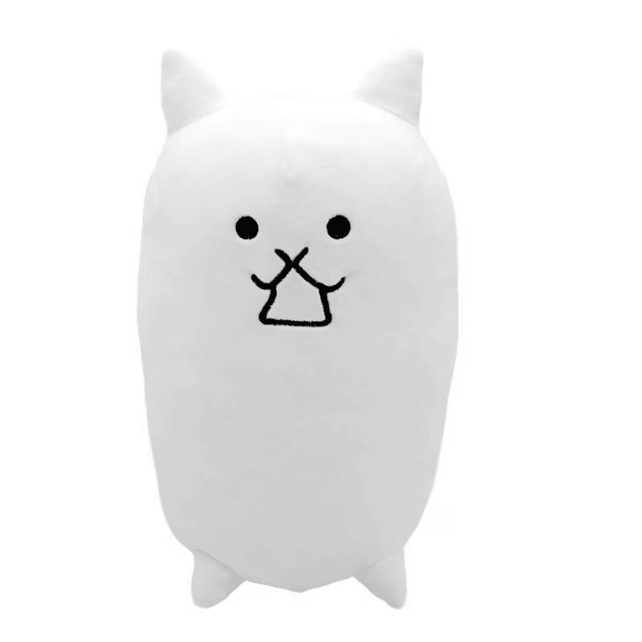

About
Here's a little bit about the Tank Cat
Tank Cat's only purpose is to act as a shield, providing frontline protection for heavy hitters behind it, allowing them to utilize their range advantage. Its real strength is in the cheap cost and rapid recharge time which feeds a near continuous stream of replacements to the frontline when spammed. Early on, Tank Cat has a longer recharge time than Cat, so time them carefully to maximize their efficiency. Later on, thanks to Treasure and Research upgrades, Tank Cat's cooldown can reach the lowest possible length (2 seconds), allowing it to be as spammable as Cat and become a more effective layer of defense for the Cat army. Conversely, it is rather slow, making it difficult to maintain a frontline shield if the battle zone is wide or if the Cats are near the enemy base. Players can overcome this deficiency by combining Tank Cat and its Crazed counterpart and/or other fast moving, defensive units (like Riceball Cat) to fill any gaps and maintain a solid layer of defense. Tank Cat and its evolutions' very low attack power is useful in stages where only weak enemies appear at the beginning. Since it can withstand many hits from peons and does little damage, it can easily stall the stage by clogging the enemy limit, buying time for the player to upgrade the Worker Cat before summoning more expensive Cats. This can be very useful in stages such as Deathhawk, as the peons are strong but can be stalled for long periods of time. With this unit and others to finish the base faster, one can win the fight without the boss even spawning.
True Form: The only important improvement Eraser Cat gains is a much-needed increase in health. This allows it to tank hits from more enemies than before, such as the Crazed Cat enemy and R.Ost. It is still slower than Manic Eraser, meaning it takes longer to reach the frontline. Despite this, it also allows for a tighter line of meatshields that is effective in preventing fast pushers from advancing quickly. As with the other Normal Cats (barring the Basic Cat), a good number of plus levels is necessary to keep Eraser Cat relevant in late-game (Battle Cats Wiki).
BACK HOME